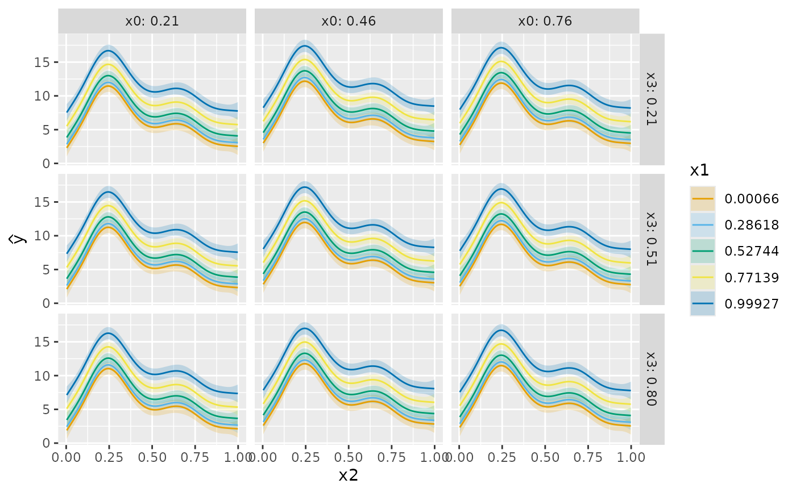
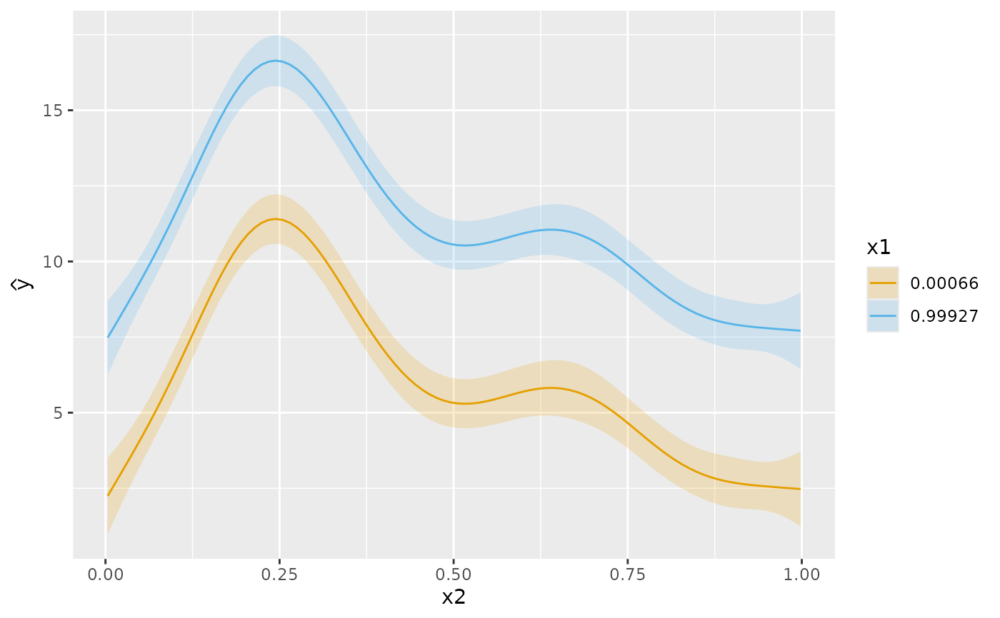
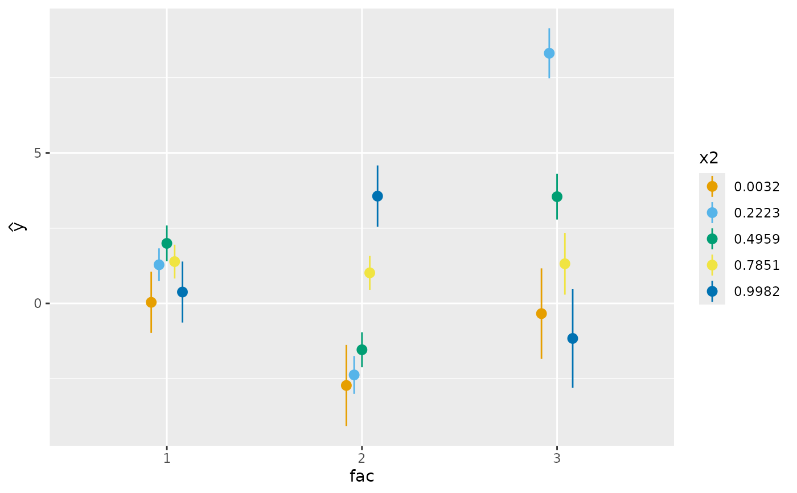
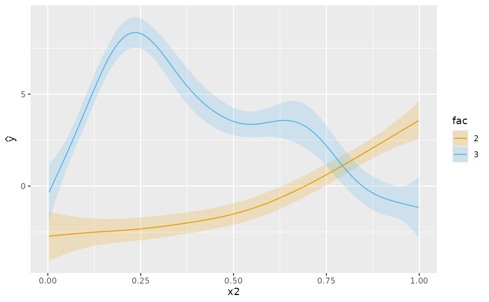

Generate predicted values from a GAM, conditional upon supplied values of
covariates. conditional_values() is modelled after
marginaleffects::plot_predictions(), but with an intentionally simpler,
more restrictive functionality. The intended use case is for quickly
visualizing predicted values from a fitted GAM on the response scale. For
more complex model predictions, you are strongly encouraged to use
marginaleffects::plot_predictions().
Arguments
- model
a fitted GAM object.
- condition
either a character vector or a list supplying the names of covariates, and possibly their values, to condition up. The order of the values determines how these are plotted via the
draw.conditional_values()method; the first element is mapped to the x channel, the second element to the colour channel, the third toggplot2::facet_wrap()if no fourth element is present, if present, the fourth element is mapped to the rows and the third element is mapped to the columns ofggplot2::facet_grid().- data
data frame of values at which to predict. If supplied overrides values supplied through
condition.- scale
character; which scale should predictions be returned on?
- ...
arguments passed to
fitted_values().- n_vals
numeric; number of values to generate for numeric variables named in
condition.- ci_level
numeric; a number on interval (0,1) giving the coverage for credible intervals.
Examples
load_mgcv()
df <- data_sim("eg1", seed = 2)
m1 <- gam(y ~ s(x0) + s(x1) + s(x2) + s(x3), data = df, method = "REML")
# predictions conditional on values evenly spaced over x2, all other
# variables in model are held at representative values
cv <- conditional_values(
m1,
condition = "x2"
)
# plot
cv |> draw()
# as above but condition on `x1` also. When plotted, `x1` is mapped to the
# colour channel, noting that it has been summarised using fivenum()
cv <- conditional_values(
m1,
condition = c("x2", "x1")
)
# plot
cv |> draw()
# can pass `condition` a list, allowing for greater flexibility
# For example, here we condition on all four variables in the model,
# summarising:
# * `x1` at its five number summary,
# * `x0 at its quartiles
# * `x3` at its mean a d mean +/- sd
cv <- conditional_values(
m1,
condition = list("x2", x1 = "fivenum", x0 = "quartile", x3 = "threenum")
)
# plot
cv |> draw()

# some model terms can be exclude from the conditional predictions using the
# `exclude` mechanism of `predict.gam`. Here we exclude the effects of
# `s(x0)` and `s(x3)` from the conditional predictions. This, in effect,
# treats these smooths as having **0** effect on the conditional predictions
# of the response, even though the two smooths conditioned on (`s(x2)` and
# `s(x1)`) were estimated given the two excluded smooths were in the model
cv <- conditional_values(
m1,
condition = list("x2", x1 = "minmax"),
exclude = c("s(x0)", "s(x3)")
)
# plot
cv |> draw()

# categorical conditions are also handled
df <- data_sim("eg4", seed = 2)
m2 <- gam(y ~ fac + s(x2, by = fac) + s(x0), data = df, method = "REML")
cv <- conditional_values(
m2,
condition = list("fac", x2 = "fivenum")
)
# plot - we see a discrete x axis
cv |> draw()

# in this example we condition on `x2` and `fac %in% c(2,3)`
cv <- conditional_values(
m2,
condition = list("x2", fac = 2:3)
)
# plot - smooths of `x2` for `fac == 2` and `fac == 3`
cv |> draw()
